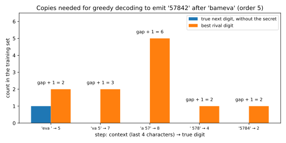

13 Memorization and training-data extraction
13.1 Why this matters
A language model trained on scraped text sees phone numbers, addresses, keys and private messages. Ask it to continue “Anna Smith’s phone number is”, and it may finish the sentence with the real number. Nobody queried a database, and no breach leaked anything. The number is stored in the model’s weights, and it comes out through the model’s normal interface. This is training-data extraction. Membership inference asks whether a record was in the training set, and the attacker needs the record in hand to ask. Extraction goes further, because the attacker gets the record itself, often without knowing that it existed.
This chapter first asks what it means for a model to memorize a string, since several definitions exist and they assume different attackers. It then asks which strings get memorized, and finds that repetition in the training data and the size of the model decide it. Finally it shows how an auditor measures memorization and how an attacker finds memorized strings in practice.
One idea runs through all three answers. A language model gives every possible string a probability. Fix the context in which a secret appears, say “my pin is”. Then list every possible filler, here all five-digit pins, from the most likely to the least likely under the model. The rank of the true secret is its position in that list. It is also the number of guesses an attacker needs if it tries the fillers in that order. Memorization means that the model puts a training string far above the other strings that could have stood in its place. A low rank therefore means that the model has done most of the attacker’s work. Every measure in this chapter reads that rank in its own way.
13.2 How a language model scores a string
Every experiment in this chapter uses one small example that runs in seconds. The training set is a contact list. Each line is a made-up name of three syllables, a space, and a five-digit pin, such as toneka 14524. The list has 5,000 background lines, each seen once. Its 600 secret lines, whose pins the experiments try to recover, come in six groups of 100. All the lines of a group are repeated equally often, from once in the first group, doubling each time, to 32 times in the last. Counting the copies, the training set has 11,300 lines.
A language model never scores a whole string at once. It answers a smaller question many times: given everything written so far, how likely is each possible next symbol? To score a whole string after a prompt, the model multiplies these one-step probabilities, which is the chain rule of probability. For the pin 16430 after the prompt “migule” and a space, the model multiplies five numbers. The first is the probability of 1 after the prompt, the second that of 6 after the prompt and 1, and so on to the last digit.
Taking the logarithm turns this product into a sum of per-symbol log-probabilities. The negative base-2 logarithm of the product is the string’s log-perplexity, in bits. It measures how surprised the model is by the string, and each extra bit means the model finds the string half as likely. Every score in this chapter is built from this sum.
The model in the example is a character \(n\)-gram model, the simplest language model there is. An \(n\)-gram model of order \(n\) predicts the next character from the last \(n - 1\) characters, which it calls the context. When this chapter writes out a context, _ stands for a space, so gule_ is the five characters before the first digit of migule 16430.
Training such a model is nothing more than counting. Write \(c\) for a context and \(w\) for a possible next symbol. For every such pair, the model stores the number of times the symbol followed the context in the training text, written \(N(c, w)\). These counts are the model’s parameters, and a higher order stores more of them, because it tells apart more contexts. The order therefore plays the role of model size.
The natural prediction would be the fraction of times \(w\) followed \(c\). But that gives probability 0 to every symbol never seen after \(c\), and one zero in the chain rule makes a whole string impossible. Add-\(\alpha\) smoothing avoids the zeros by pretending that every symbol was seen \(\alpha\) extra times in every context. Write \(V\) for the number of symbols in the alphabet and \(N(c)\) for the total count of context \(c\). The smoothed probability is \[p(w \mid c) = \frac{N(c, w) + \alpha}{N(c) + \alpha V}. \tag{13.1}\]
Three consequences of this formula drive the whole chapter. The first is that training on \(k\) copies of a line adds \(k\) to the count of every pair of context and next symbol that the line passes through. It changes no other count.
The second is that smoothing does not change which symbol is most likely. In a fixed context, every count gets the same extra \(\alpha\), and every symbol shares the same denominator. So the symbol with the largest count still has the largest probability. Greedy decoding, which writes out the most likely next symbol at each step, therefore just follows the largest counts.
The third concerns a context that occurs only in the copies of one line. Suppose a line has been inserted \(k\) times, and one of its contexts appears nowhere else. In that context the line’s own next symbol has count \(k\), and every other symbol has count 0. The true symbol is then \((k + \alpha)/\alpha\) times as likely as any other symbol. The size of the alphabet does not matter, because it sits in the denominator that all symbols share. The example uses \(\alpha = 0.1\) and an alphabet of 39 symbols, so one copy makes the true symbol 11 times as likely as each rival, a ratio worth \(\log_2 11 = 3.46\) bits. That is the mechanism of memorization in this example: a context that belongs to one training line alone, followed by that line’s next symbol.
Ranks need one more convention. Candidates tied with the secret count in its rank, because the attacker may have to try them all first. Information theory measures how hard a secret is to guess with its min-entropy, the negative logarithm of the chance that the best single guess is right. A uniformly random five-digit pin has 16.61 bits of it, and this is the scale on which exposure, later in the chapter, measures memorization.
13.3 Verbatim, approximate, discoverable, extractable
“The model memorized its training data” can mean several things. A model that completes a famous quotation has memorized it, but nothing private leaked, while a model that emits a phone number seen once in training has leaked it. Some definitions assume that the attacker knows the beginning of the training string, and others ask whether any prompt at all brings it out. The numbers differ by orders of magnitude between these notions, so a report must say which one it measures.
All the definitions use greedy decoding from a prompt. A string is extractable (Carlini et al. 2021) if some prompt, any prompt at all, makes greedy decoding begin with that string. A string is \(k\)-eidetically memorized if it is extractable and appears in at most \(k\) documents of the training data. Here \(k\) counts documents, much as it counts copies in the example. A small \(k\) is the dangerous case, because it describes a secret seen once and given back.
The next definition assumes more of the attacker. Suppose the training data contain a prefix followed by a suffix. The suffix is discoverably memorized (Carlini et al. 2023, named by Nasr et al. 2023) if prompting with that same prefix makes greedy decoding produce the suffix. Discoverable implies extractable, because the training prefix is one of the prompts that extractability allows. The converse fails. An extractable string may come out after a prompt that is not its training prefix, while its own prefix leads somewhere else.
The definitions also differ in how close the output must be. The three above are verbatim, which means the output must match exactly. A suffix is approximately memorized (Ippolito et al. 2023) if greedy decoding from its prefix comes within a chosen distance of it, such as a number of wrong characters. In this chapter’s example, a pin with at most one wrong digit counts. A verbatim match is also an approximate one, since an exact match has distance 0.
Each definition fits a different threat model. Discoverable memorization assumes an attacker who holds the training prefix. That is a strong assumption, but it makes memorization easy to measure, because you can prompt with every training prefix and compare the output with the true suffix. Extractable memorization fits the real attacker, who has only the model. It is hard to measure, because you would have to search over all prompts. So papers report discoverable rates on open models, and attacks then show how much of that an outsider can actually reach.
Verbatim matching is a weak notion of leakage, because it misses near copies. A model that emits a phone number with one digit changed has still leaked it to anyone who reads it. Ippolito et al. (2023) show that a filter blocking verbatim training text is easy to bypass with prompts that change the style, while the approximate copies still come out. A verbatim rate is therefore a lower bound on the leak, not a measure of it.
Greedy decoding is a convenience for measurement, and deployed systems sample instead. A sample at temperature 1 uses the model’s probabilities unchanged, drawing each next symbol with exactly the probability the model gives it. By the chain rule, the chance that one sample writes out a string \(x\) after a prompt is then the model’s probability of \(x\) after that prompt, written \(p\). Write \(m\) for the number of samples. The budget below assumes that the samples are drawn independently. Then the chances of missing multiply, so all \(m\) samples miss with probability \((1 - p)^m\), which is at most \(e^{-mp}\). Asking for this to be at most a small failure probability \(\beta\) gives a budget: \[m \ge \frac{\ln(1/\beta)}{p} \quad\text{samples suffice to extract } x \text{ with probability at least } 1 - \beta. \tag{13.2}\] The budget is inversely proportional to the string’s probability. For example, take a string with probability \(10^{-3}\) after its prefix, and ask for 99% confidence, \(\beta = 0.01\). The budget is then about 4,600 samples.
Sampling gives a graded version of memorization. For the secret migule 16430, inserted 4 times, greedy decoding from its prefix gets the pin wrong at orders 3 to 5 and right from order 6 on. At order 5, a single sample reproduces a secret’s pin with probability \(1.4 \times 10^{-3}\) on average over the secrets inserted 4 times, and with probability 0.142 over those inserted 32 times. For a 99% chance of extracting the pin, the first group needs 3,252 samples and the second only 31. Repetition turns a needle in a haystack into the model’s favourite answer.
13.4 Duplication and model size: the copies a string needs
Carlini et al. (2023) measured discoverable memorization on a family of open models. They found that it grows log-linearly with three things, the number of times a string is repeated, the size of the model and the length of the prompt. Log-linear means that the rate rises by about the same amount each time one of these is multiplied by a fixed factor. Kandpal, Wallace & Raffel (2022) found that a sequence repeated 10 times is generated about 1,000 times more often than a sequence seen once. The \(n\)-gram example shows where both effects come from, using nothing but its counts.
The explanation is a vote. Greedy decoding follows the largest count at each step. Each copy of a line adds a vote for its own next symbol in every context it passes through. The line comes out when, at every step, these votes beat the strongest rival symbol.
To make this precise, look at one step of the line’s suffix and count only the rest of the training set, without the line’s copies. Write \(c_t\) for the context at step \(t\) and \(x_t\) for the true symbol there. Write \(N_-(c_t, w)\) for the number of times a symbol \(w\) follows that context outside the line’s copies. The gap at that step is how far the strongest rival symbol is ahead of the true symbol in these counts.
With \(k\) copies, the true symbol wins the step when \(k\) is larger than the gap, that is when \(k\) is at least the gap plus one. Greedy decoding stays on the line’s path only while every step wins, because one wrong symbol puts it in a different context. So the number of copies the line needs, written \(k^*\), is set by the step where the rival is furthest ahead: \[k^* = \max_{t}\Big[\max_{w \ne x_t}N_-(c_t, w) - N_-(c_t, x_t)\Big] + 1. \tag{13.3}\] Apart from ties, greedy decoding from the prefix emits the suffix if and only if the number of copies is at least \(k^*\). At some steps a tie with the rival already wins, because of how greedy decoding breaks ties, and such a step needs one copy fewer.
The statement needs a condition. Each context must occur only once within the line, so that a copy adds a vote to the true symbol and to no rival. Without it, a copy could also add a vote to a rival at the same context, and the copies would no longer close the gap one vote at a time. A line breaks the condition only if it repeats the same stretch of \(n - 1\) characters, and in the example almost no line does.
Figure 13.1 draws the vote for one line. A line whose contexts all belong to it alone has no rival votes at any step, so every gap is 0 and \(k^* = 1\). Such a line is memorized from a single copy. Over a population of lines, the fraction memorized at \(k\) copies is the fraction of lines whose \(k^*\) is at most \(k\).

Model size works by splitting the vote. A longer context divides the training positions into finer groups, since fewer positions share any one context of 7 characters than of 2. So the rival counts in a longer context are smaller, while the line’s own \(k\) votes stay with it in every context it passes through. In the limit every line has contexts of its own, and \(k^* = 1\) for every line. This is the example’s version of “larger models memorize more”. A larger model has enough counts to give rare strings contexts of their own.
The secret migule 16430 shows how the two effects trade off. Its \(k^*\) depends only on the rest of the corpus, not on the 4 copies it actually has. At order 3 it would need 151 copies, and at order 4 it would need 43. At order 5 it needs 9, so its 4 copies lose, and greedy decoding writes 14032, with three wrong digits. From order 6 on it needs only 1, because an order-6 model reads five characters of context. From the first digit on, its contexts are gule_, then ule_1, and so on, and they occur in this line and nowhere else. Shorter contexts, such as the four characters ule_ that an order-5 model reads, are shared with other lines, whose digits can outvote the four copies.
For the same reason, rare data are exposed first. A line whose name shares few syllables with other names reaches a context of its own sooner. Algorithmic stability and generalization found the same pattern for self-influence, how much a model’s loss on a training example rises when that example is left out of training. Nothing else in the data predicts an atypical example, so a model can fit it only by memorizing it, and such examples have the largest self-influence.
Deduplication is the cheapest defence, because it lowers the number of copies of every repeated string. Lee et al. (2022) found that models trained on deduplicated data emit memorized text about ten times less often, without losing quality. Kandpal et al. (2022) found that it sharply lowers the success of extraction attacks. It does nothing for a string seen once in a high-capacity model, though, because there a single copy is already enough.
To measure discoverable memorization in the example, the script prompts each of the 600 secrets with its true prefix, the name and the space. It then decodes five symbols greedily and compares them with the pin. It also computes \(k^*\) for every secret. The predicted fraction with \(k^*\) at most \(k\) matches the measured verbatim rate exactly in all 36 combinations of order and copies. The formula is not an approximation, but a restatement of what greedy decoding does with counts.
The main run shows both effects. Along the copies, at order 5, the verbatim rate climbs from 0 at one copy to 0.70 at 32 copies. Along the orders, a line seen once is safe at orders up to 5. At order 6 it is memorized 8% of the time, and the share climbs to 70% at order 7 and 98% at order 8. The order-8 model has memorized its training set almost completely, and its memorized singletons are 1-eidetic, seen in one document and given back. Figure 13.2 plots the same measurement for a second, independent draw of the training set.

The approximate rates are barely above the verbatim ones. A pin in this example either sits in contexts of its own and comes out whole, or it loses an early vote and wanders off in the wrong context. Natural text, with its many near-ties such as synonyms, is where approximate memorization adds the most (Ippolito et al. 2023).
Carlini et al. (2023) ran the same measurement on GPT-Neo and GPT-J models from 125 million to 6 billion parameters. All were trained on the Pile, a large public collection of web and book text. They prompted each model with 50 tokens of a training sequence, decoded 50 tokens greedily and counted exact matches. The largest model reproduced at least 1% of its training data this way.
13.5 Canaries and the exposure metric
Discoverable memorization is all or nothing, since the secret either comes out or does not. An auditor wants a graded answer: how much closer to the secret does the model bring an attacker? Carlini et al. (2019) proposed planting canaries in the training data. A canary is a random secret of a fixed format, such as “my pin is” followed by five random digits. After training, you measure where the model ranks the planted secret among all secrets of the same format. Because you drew the canary at random and planted it yourself, you know the right answer and the number of possible values, so you can measure memorization exactly.
Write \(\mathcal R\) for the set of values that can fill the hole in the format, here the \(10^5\) pins, and \(|\mathcal R|\) for their number. The canary’s value, written \(\hat r\), is drawn uniformly from \(\mathcal R\), and the line is inserted \(k\) times. Before seeing the model, an attacker faces all \(|\mathcal R|\) candidates, which is \(\log_2|\mathcal R|\) bits of search. After seeing it, the attacker faces only the canary’s rank, which is \(\log_2\operatorname{rank}(\hat r)\) bits. The exposure is the difference, the number of bits of search that the model saves the attacker: \[\mathrm{exposure}(\hat r) = \log_2|\mathcal R| - \log_2\operatorname{rank}(\hat r). \tag{13.4}\]
The rank lies between 1 and \(|\mathcal R|\), so the exposure lies between 0 and \(\log_2|\mathcal R|\). It reaches its maximum when the canary is the model’s top candidate. Each bit of exposure halves the number of guesses the attacker needs.
What makes exposure an audit tool is that you know how it behaves when nothing was memorized. Suppose the model does not depend on the canary’s value, for instance because the canary was never inserted. Then the model’s scores are fixed before the canary’s value is drawn, so a uniformly drawn value lands at a uniformly random position in their order. Pick a threshold of \(t\) bits. An exposure of at least \(t\) bits means a rank in the top fraction \(2^{-t}\) of the list. A canary that was never inserted lands there with probability at most that fraction: \[\Pr\big[\mathrm{exposure}(\hat r) \ge t\big] \le 2^{-t}. \tag{13.5}\] Ties among the scores do not break this bound, because a tie can only push the canary’s rank up, which lowers its exposure.
The same argument gives the average exposure of a canary that was never inserted. Its rank is uniform, and the average of \(\log_2\) of a uniform rank falls a little short of \(\log_2|\mathcal R|\). When no two candidates tie, the shortfall, which is the average exposure, tends to \(\log_2 e = 1.4427\) bits as the space grows, where \(e\) is the base of the natural logarithm. For the \(10^5\) pins of the example it is already 1.4426 bits.
A space of four candidates makes the null concrete. A canary that was never inserted has each of the four ranks with probability one quarter. Its exposure is then 2 bits at rank 1, 1 bit at rank 2, 0.415 bits at rank 3 and 0 at rank 4. So an exposure of at least 1 bit has probability one half, from the top two ranks. An exposure of 2 bits has probability one quarter, from rank 1 alone. In this example, the bound is exact at whole-number exposures.
The null distribution makes exposure a membership test. “Was this canary inserted?” is a membership question (Membership inference). Consider a test that says “inserted” when the exposure is at least \(t\) bits. Its false positive rate (FPR), the chance of saying “inserted” about a canary that was not, is at most \(2^{-t}\). Put another way, the chance that a canary never inserted would look at least this memorized is a p-value, and \(2^{-\text{exposure}}\) is an upper bound on it. Membership inference calibrates its tests with shadow models, extra models trained with and without a record. Exposure needs none, because the canary’s own randomness does the calibration.
Exposure is also guessing work saved. Before seeing the model, the attacker faces a canary with \(\log_2|\mathcal R|\) bits of min-entropy. After seeing it, an attacker who guesses in the model’s order needs only as many tries as the canary’s rank. Carlini et al. (2019) note that an exposure close to \(\log_2|\mathcal R|\) means the secret can actually be extracted. One way is a shortest-path search that finds the most likely pin digit by digit, without listing every pin.
For a large space, exposure must be estimated, because nobody can score every 9-digit number. The first estimator is sampling. Score \(m\) random candidates and count the share of them that score at least as high as the canary. That share estimates the canary’s rank as a fraction of the whole space. It cannot resolve exposures above \(\log_2 m\) bits, because a canary that beats all \(m\) sampled candidates only tells you that its rank fraction is below about \(1/m\). The second estimator is extrapolation. Fit a distribution to the sampled scores and read off how much of it lies beyond the canary’s score. Carlini et al. (2019) fit a skew-normal, a normal distribution with an extra parameter that lets one tail be heavier than the other. The fit is only as good as its tail, and the tail is exactly the part that sampling cannot reach.
In the example, the script estimates an order-3 canary’s exposure from 10,000 random pins. Counting is accurate there, because every exposure is well below 13.3 bits, the most that 10,000 samples can resolve. Fitting a plain normal distribution instead overestimates the exposure by up to 3 bits. The scores have a heavier right tail than a normal, so the fit puts too few pins above the canary, and the canary’s rank looks smaller than it is. This is why Carlini et al. (2019) fit a skewed distribution.
Ties can also hide memorization. In a context that the model has never seen, every count is 0, so smoothing gives every symbol the same probability, one over the alphabet size. All candidates then tie, so every rank is \(|\mathcal R|\) and every exposure is 0, whatever the model has learned elsewhere. On this corpus, the order-8 model without a canary gives every pin exactly the same probability after “my pin is”, so every pin there has exposure 0.
Canaries also test defences, by comparing two training runs that differ in one thing, such as training with and without deduplication. Under a differentially private algorithm (Part 3), an exposure near the null mean says the planted secrets were not memorized. Carlini et al. (2019) found that private training kept their canaries at the exposure of canaries never inserted. Measuring exposure before and after an unlearning method tests that method. Auditing differentially private training uses the same tool, with canaries designed to be as exposed as possible.
The example plants “my pin is 58745” and computes its exact exposure by scoring all \(10^5\) pins (Table 13.1). The jump from no copies to one copy depends on whether a digit of the canary sits in a context that only the canary’s copies fill. No background line contains s_, an s followed by a space, because every name ends in a vowel.
| Order \(n\) | \(k = 0\) | \(k = 1\) | \(k = 2\) | \(k = 4\) | \(k = 8\) | \(k = 16\) | \(k = 32\) | \(k = 64\) |
|---|---|---|---|---|---|---|---|---|
| 2 | 0.40 | 0.41 | 0.43 | 0.47 | 0.55 | 0.73 | 1.21 | 2.54 |
| 3 | 0.89 | 4.05 | 4.44 | 4.71 | 5.24 | 6.59 | 9.69 | 15.61 |
| 4 | 3.76 | 9.98 | 12.15 | 15.02 | 15.61 | 16.61 | 16.61 | 16.61 |
The orders differ in which digits get a context of their own. At order 2 the first digit’s context is a single space, which all 11,300 lines share. So one copy is one vote among thousands, and it moves the exposure by only 0.01 bits. At order 3 the first digit’s context is s_, which only the canary fills. One copy then makes that digit 11 times as likely as its rivals, a factor worth 3.46 bits. The exposure rises by 3.16 bits, a little less, because the rank also depends on how the other pins’ scores are spread. At order 4 the first two digits have contexts of their own, and the exposure rises by 6.22 bits, a little under twice 3.46. The remaining digits share their contexts with the background pins, and they move only as the copies outvote those pins.
Figure 13.3 averages several canaries, and shows that larger models reach the maximum with fewer copies.

The null also holds in the example, where every pin that was never inserted plays the part of an uninserted canary. At orders 2, 3 and 4 their mean exposure is 1.443 bits, against the 1.4426 bits predicted for \(10^5\) candidates. A fraction \(1/32 = 2^{-5}\) of them has an exposure of at least 5 bits, exactly on the bound.
13.6 Extraction without the prefix: generate, rank, verify
The attacker in the definitions section held the training prefix, but a real attacker has only the model. Carlini et al. (2021) showed how such an attacker extracts training data from GPT-2. It generates many samples, ranks them by how likely each is to be memorized, and checks the top of the ranking against public sources. The hard step is the ranking.
A model can find a string likely for two different reasons. The string may be ordinary, the kind of text any model of the language finds likely. Or the model may have memorized it from its training set. Only the second is a leak, so ranking is a test between two explanations. To score them you need a model of each. A reference model, trained on data from the same source but not on the target’s training set, stands in for ordinary text. The target model itself stands in for memorization. Write \(p_\theta(x)\) for the target’s probability of a string \(x\), and \(p_{\mathrm{ref}}(x)\) for the reference’s. The evidence for memorization is how much more likely the target finds the string than the reference does, which on a log scale is a difference: \[\Lambda(x) = \ln p_\theta(x) - \ln p_{\mathrm{ref}}(x). \tag{13.6}\]
This is the best possible ranking, by the Neyman–Pearson lemma of Hypothesis testing. Among all tests that flag the same fraction of ordinary strings, the test that thresholds the likelihood ratio flags the largest fraction of memorized ones. The reason is a budget argument. Flagging a string costs false positives in proportion to its reference probability and gains true positives in proportion to its target probability. For a fixed budget of false positives you catch the most by flagging the strings with the largest ratio first. Membership inference made the same move when it compared a record’s loss under the target with the loss that models trained without the record give it.
Ranking by the target’s likelihood alone is the same as treating the reference probability as constant, as if every string were equally common in advance. That assumption is wrong exactly for strings that any model finds likely, such as software licences, news boilerplate and number sequences. These are in the training data, but extracting them reveals nothing, and they are the strings that raw likelihood puts first. The reference model knows them too, so their ratio is close to 1 and they cancel in Equation 13.6.
The reference can be crude. Carlini et al. (2021) used a smaller model of the same family and the target’s own likelihood on the lowercased text. They also used the length of the text after compression with zlib, a general-purpose compressor. Each gives a different idea of ordinary text, and each catches strings that the others miss.
An attacker who checks the top 100 candidates by hand cares about precision, how many of those candidates are real training data. It does not care about recall, how many of all memorized strings it eventually finds. Flagging only a few strings keeps the FPR tiny. If most of the flagged strings are real training data, the attack catches members at that tiny FPR, which is the operating point that matters in membership inference too.
In the example, the attacker draws 20,000 lines from the order-6 model, starting each at the beginning of a line. To make the ranking realistic, the target’s training set also contains 50 public lines, repeated 100 times each, standing in for a published directory. The attacker’s reference model is trained on an independent contact list of 5,000 lines, generated the same way as the target’s background lines, which also contains the public lines. A generation counts as a hit if it is a private training line, one that is in the target’s training set and is not public.
Of the 20,000 samples, 14,852 are distinct. Among them are 197 private training lines and all 50 public lines. The samples contain no secret inserted fewer than 8 times. Above that the share climbs fast, to 11% at 8 copies, 86% at 16 and all of them at 32. With the prefix in hand, by contrast, 8% of the singletons and 65% of the lines seen twice come out at order 6 (Section 13.4). Without the prefix, a sample must first produce the right name before it can produce the pin, and only heavily repeated lines make their names likely enough. This attack extracts much less than is discoverable.
The ranking makes a large difference (Figure 13.4). Among the top 100 distinct generations by target likelihood, 45 are private training lines. Most of the rest are the public lines, which are the most likely strings the model knows because each was repeated 100 times. Ranked by Equation 13.6, 85 of the top 100 are private training lines, because the reference model also finds the public lines likely and cancels them.

Nasr et al. (2023) carried extraction to production language models. On closed models, whose training data are unknown, they counted matches against 9 terabytes of public web text as a lower bound.
The aligned chat model ChatGPT (gpt-3.5-turbo) rarely emitted training data in normal use. Alignment is a later training stage, and it had taught the model to answer as an assistant rather than continue documents. Their divergence attack asked it to repeat one word forever. The model eventually fell back to emitting text that looked like pretraining documents, and emitted about 150 times more training data than in normal use. About 200 US dollars of queries extracted over 10,000 unique memorized examples, including personal contact details. The attack follows this chapter’s structure. It generates with a prompt that escapes the aligned behaviour, verifies the output against a corpus, and estimates from what it found how much the model has memorized in total.
13.7 Code
Exposure and sample budgets are what you compute in an audit, and they need only logarithms:
from math import ceil, log, log2
def exposure(rank: int, space: int) -> float:
"""Bits of guessing the model saves: log2 |R| - log2 rank."""
return log2(space) - log2(rank)
def null_p_value(exposure_bits: float) -> float:
"""Upper bound on the chance that a canary never inserted scores this high."""
return 2.0**-exposure_bits
def samples_needed(p: float, beta: float) -> int:
"""Smallest m with (1 - p)^m <= beta: samples for a 1 - beta chance of drawing a string of probability p."""
return ceil(log(beta) / log(1 - p))
def samples_bound(p: float, beta: float) -> int:
"""The simpler sufficient budget ln(1 / beta) / p."""
return ceil(log(1 / beta) / p)
print(f"{exposure(1, 10**5):.2f}") # 16.61
print(f"{exposure(6018, 10**5):.2f}") # 4.05
print(f"{null_p_value(10):.5f}") # 0.00098
print(samples_needed(0.142, 0.01)) # 31
print(samples_bound(1e-3, 0.01)) # 4606The second line is the order-3 canary at one copy, ranked 6,018th among \(10^5\) pins. The third shows that an exposure of 10 bits bounds the p-value below 0.001, whatever the size of the space. The full edition’s script runs every experiment in this chapter, from building the contact list to the attack.
uv run python code/part02-attacks/memorization.py13.8 Cheat sheet
| Result | Statement | Key fact |
|---|---|---|
| Extractable | Some prompt makes greedy decoding emit the string | The real attacker’s notion; hard to measure |
| Discoverable | Greedy decoding from the true prefix emits the suffix | Easy to measure; implies extractable |
| \(k\)-eidetic | Extractable and in at most \(k\) documents | \(k = 1\): a secret seen once comes back |
| Approximate | Greedy output within a distance of the suffix | Verbatim rates understate the leak |
| Samples needed | \(m \ge \ln(1/\beta)/p\), with \(p\) the string’s probability after the prompt | Assumes independent samples |
| Copies needed (\(n\)-gram) | \(k^*\) is the largest gap to a rival on the path, plus one | Unique contexts give \(k^* = 1\) |
| Exposure | \(\log_2\lvert\mathcal R\rvert - \log_2\operatorname{rank}\) | Bits of guessing saved |
| Exposure null | \(\Pr[\mathrm{exposure} \ge t] \le 2^{-t}\); mean tends to 1.443 bits | Exposure is \(-\log_2\) of a bound on a p-value |
| Ranking generations | \(\ln p_\theta(x) - \ln p_{\mathrm{ref}}(x)\) | Neyman–Pearson; cancels text that any model finds likely |
Rules of thumb
- Memorization is a rank: the secret placed above the strings it could have been.
- Duplication is a vote in every context a string passes through, and the most contested context decides.
- Larger models split contexts and give rare strings their own parameters, so they memorize more and from fewer copies.
- Deduplicate first. It is cheap and helps, but not for singletons in a high-capacity model.
- Report exposure, not just extraction, because it is graded and has a known null.
- Rank generations against a reference model, never by raw likelihood.
- An attacker without the prefix gets less than the discoverable rate suggests, but production attacks show that “less” can still be thousands of records.
13.9 Further reading
- Carlini, Liu, Erlingsson, Kos & Song, “The Secret Sharer: Evaluating and Testing Unintended Memorization in Neural Networks” (USENIX Security 2019): canaries, exposure and how to estimate it.
- Carlini et al., “Extracting Training Data from Large Language Models” (USENIX Security 2021): the generate-rank-verify attack and its reference-based rankings.
- Carlini, Ippolito, Jagielski, Lee, Tramèr & Zhang, “Quantifying Memorization Across Neural Language Models” (ICLR 2023): how memorization scales with duplication, model size and prompt length.
- Nasr et al., “Scalable Extraction of Training Data from (Production) Language Models” (2023): discoverable against extractable memorization, and the divergence attack on an aligned chat model.
Derivations. Every result in this chapter is derived step by step in the full edition’s chapter, except the measurements on real models by Carlini et al., Kandpal et al., Lee et al., Ippolito et al. and Nasr et al., which it cites.